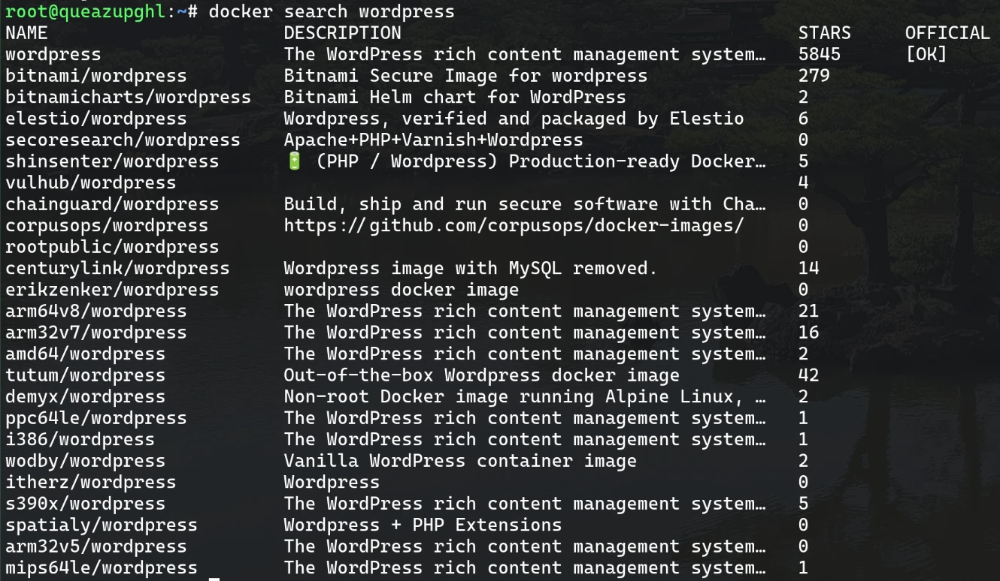
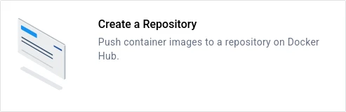
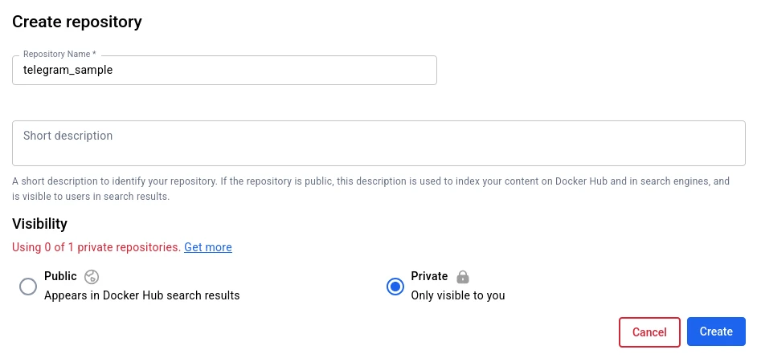
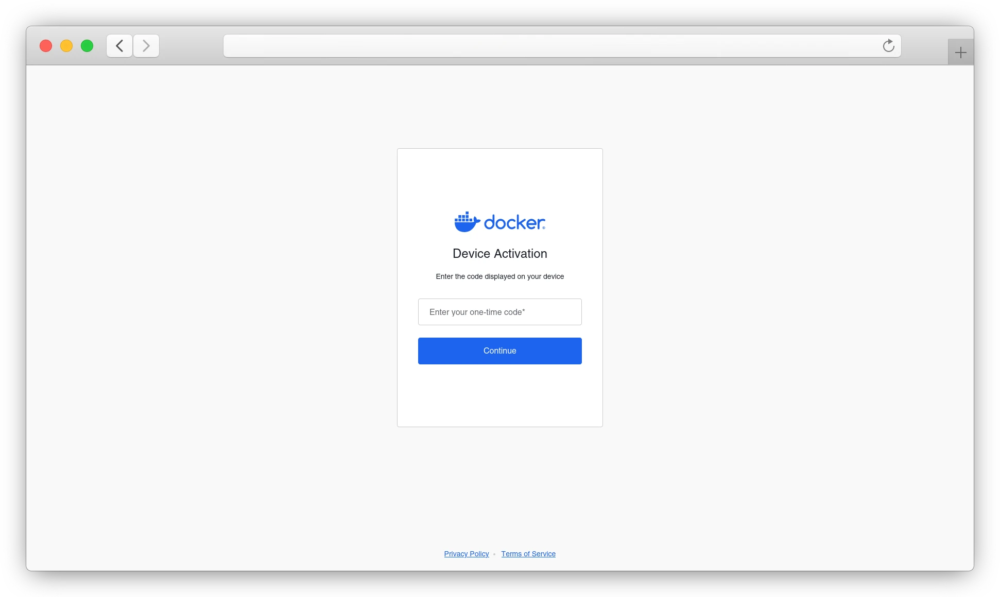
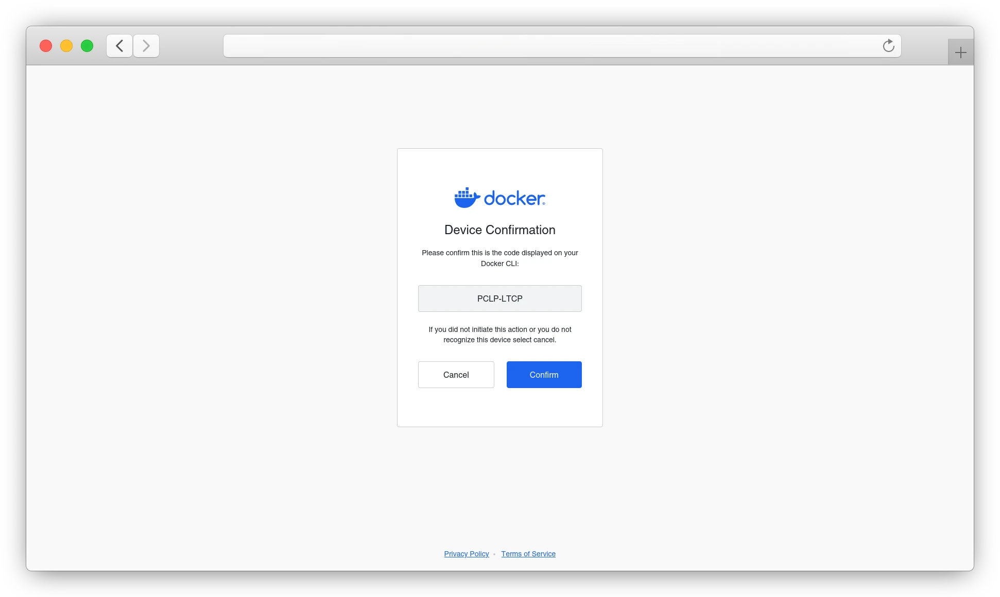
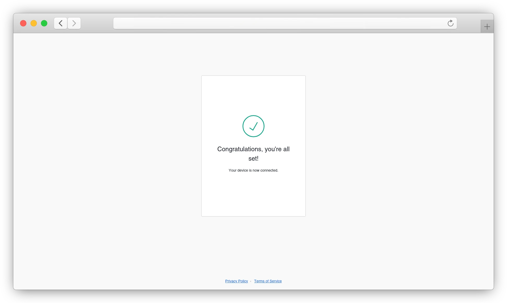

Docker_HUB
Публичный репозиторий Docker Hub насчитывает миллиарды загрузок образов каждый месяц, общее число загрузок с момента запуска сайта уже превысило четверть триллиона.
Среди популярных образов:
Эти и другие образы Docker Hub есть на официальном сайте.
Теперь, когда мы разобрали, что такое Docker Hub и Docker Registry, и перечислили основные полезные образы, перейдем к практике – расскажем, как работать с Docker Hub.
В большинстве случаев пользователи взаимодействуют с Docker Hub посредством Docker CLI для поиска, загрузки и управления образами.
Найти нужный публичный образ в Docker Hub можно с помощью команды:
docker search <искомое>
Например, чтобы найти образы, связанные с WordPress, введите следующую команду:
docker search wordpress
В выводе команды будут показаны связанные с введенным ключевым словом репозитории, а также информация о счетчике звезд и о том, является ли репозиторий официальным:

Как создать репозиторий на Docker Hub
Репозиторий представляет собой место для хранения образов на Docker Hub и может быть как публичным, так и приватным. Для создания репозитория перейдите на сайт Docker Hub, после чего авторизуйтесь или создайте аккаунт. Затем выберите пункт "Create a Repository":

Далее в появившейся форме введите название репозитория и выберите его тип – приватный или публичный. Публичные образы будут доступны всем и будут показаны в поисковой выдаче Docker Hub. Название репозитория должно совпадать с названием загружаемого впоследствии образа. Также при необходимости укажите короткое описание репозитория:

Как загрузить образ в репозиторий на Docker Hub
Для загрузки образа в репозиторий потребуется авторизоваться с помощью команды docker login:
docker login
USING WEB-BASED LOGIN
i Info → To sign in with credentials on the command line, use 'docker login -u <username>'
Your one-time device confirmation code is: GVFT-TDSS
Press ENTER to open your browser or submit your device code here: https://login.docker.com/activate
Waiting for authentication in the browser…
Перейдите по ссылке https://login.docker.com/activate и введите код подтверждения, указанный в выводе вашей команды.

Убедитесь, что код на сайте совпадает с указанным в выводе команды в терминале, после чего подтвердите вход:

Если всё было выполнено верно, появится сообщение об успешном входе – как на сайте:

Так и в терминале:
docker login
USING WEB-BASED LOGIN
i Info → To sign in with credentials on the command line, use 'docker login -u <username>'
Your one-time device confirmation code is: PCLP-LTCP
Press ENTER to open your browser or submit your device code here: https://login.docker.com/activate
Waiting for authentication in the browser…
WARNING! Your credentials are stored unencrypted in '/home/pinklife/.docker/config.json'.
Configure a credential helper to remove this warning. See
https://docs.docker.com/go/credential-store/
Login Succeeded
После авторизации вы сможете загрузить образ в репозиторий командой:
docker push имя_пользователя/название_репозитория:тег
Обратите внимание!
Загружаемый образ должен существовать на машине, с которой осуществляется загрузка, и иметь соответствующее название и тег.
Как скачать и запустить образ с Docker Hub
Для загрузки образа используется команда:
docker pull <image_name>:<tag>
Например, чтобы загрузить образ Ubuntu с тегом версии 24.04 используйте команду:
docker pull ubuntu:24.04
Для создания и запуска контейнера используется команда docker run, например:
docker run -it ubuntu:24.04 /bin/bash
За 2025 год использование контейнеров в ИТ-отрасли выросло до 92% по сравнению с 2024 годом. При этом в России объем рынка коммерческих платформ контейнеризации по итогам 2024 года достиг 5,7 млрд рублей и, по мнению экспертов, спрос на такие решения растет.
По нашим наблюдениям, сегодня около 50–70% систем в ИТ-инфраструктуре российских заказчиков до сих пор имеют монолитную архитектуру, но тенденция очевидна: всё больше компаний двигаются в сторону микросервисов и контейнеров.
Александр Титов, генеральный директор компании “Флант”
В данной статье мы кратко рассказали, что представляет собой Docker Hub, среди сценариев использования которого – хранение и обмен образами контейнеров Docker. Также мы разобрали, как работать с крупнейшим публичным репозиторием образов контейнеров.
Если возникнут вопросы, напишите нам, пожалуйста, тикет из панели управления аккаунта (раздел “Помощь и поддержка”), а если вы захотите обсудить эту статью, настройки Docker или наши продукты с коллегами по цеху и сотрудниками Beget – ждем вас в нашем сообществе в Telegram.
Рекомендуем изучить
Первые шаги после создания VPS: настройка, защита, мониторинг
Установка и настройка серверного Google Tag Manager на VPS
---------------------------------------------------------------------------------------------------------
Полезные команды для работы с Docker Hub:
bash
# Поиск официальных образов
docker search --filter is-official=true nginx
# Поиск ваших образов
docker search alensavdock
# Выйти из Docker Hub
docker logout
# Посмотреть информацию о текущем пользователе
docker system info | grep Username